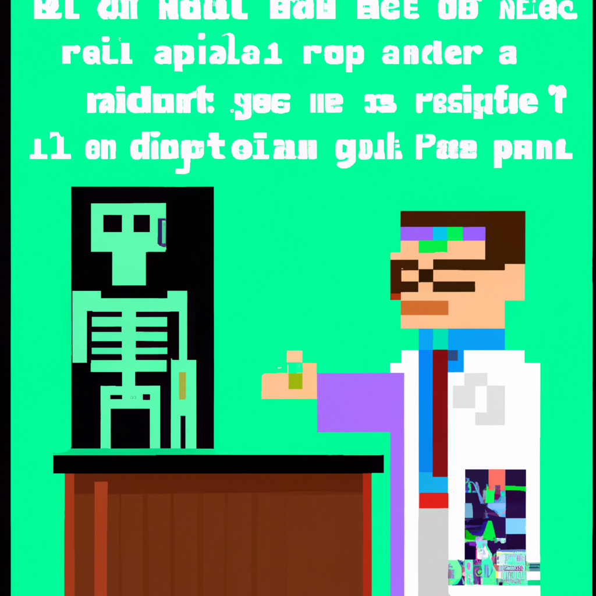

Why AI will never replace the radiologist
AI has become increasingly popular in medical imaging over the past few years. With the help of machine learning algorithms, it is possible to detect diseases, identify anomalies, and even make diagnoses. However, despite the promise of AI, there are some limitations that make it unlikely that AI will ever replace the radiologist.
First, AI algorithms require massive amounts of data to be effective. Radiology images are often taken at different angles and with different protocols, making it difficult to create a dataset that is representative of the variety of images seen in the real world. Even if a large enough dataset could be collected, algorithms must be trained on that data, which is a time-consuming and expensive process.
Second, even the best AI algorithms are not perfect. Radiologic images can be extremely nuanced, and the decisions to be made are often complex and highly subjective. AI algorithms may struggle to detect subtle features or make nuanced judgments.
Finally, AI models are not able to explain their decisions. AI algorithms are a black box, meaning that it is impossible to know why a certain decision was made. While this may not be a problem in some applications, it is unacceptable in medical imaging, where the radiologist must be able to explain their decisions and make sure they are based on a strong foundation of evidence.
In conclusion, AI has the potential to revolutionize medical imaging, but it is unlikely that it will ever completely replace the radiologist. AI algorithms require a massive amount of data and significant training to be effective and are still not as accurate as a trained human. Furthermore, AI models are unable to explain their decisions, which is unacceptable in medical imaging.